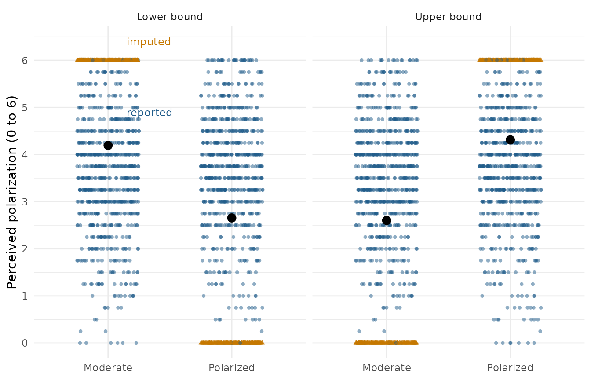
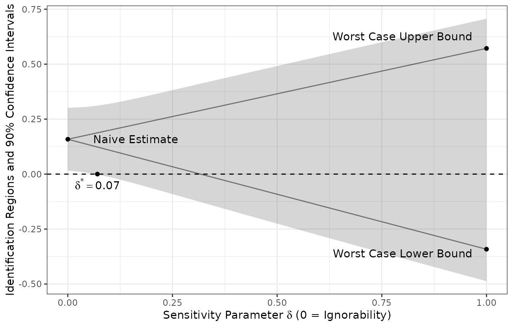
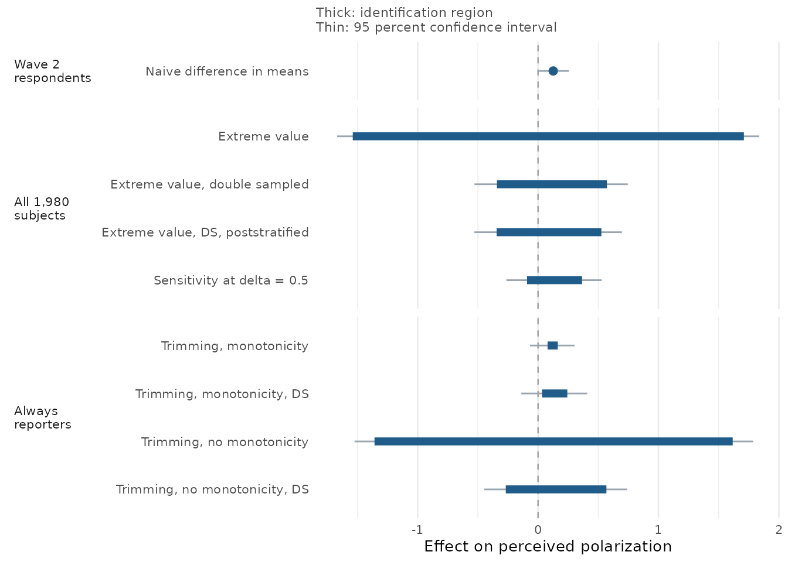

library(attrition)
library(ggplot2)
library(dplyr)
#>
#> Attaching package: 'dplyr'
#> The following objects are masked from 'package:stats':
#>
#> filter, lag
#> The following objects are masked from 'package:base':
#>
#> intersect, setdiff, setequal, union
library(purrr)This vignette works through a two-wave survey experiment in which 536
of 1,980 subjects did not report an outcome. The example is the
replication study from Coppock, Gerber, Green, and Kern (2017), which
ships with the package as levendusky_replication.
We work through the extreme value bounds without double sampling and how the extreme value bounds change with the second round data collection. In short, a follow-up on 100 of the 536 nonrespondents shrinks the identification region by a factor of 3.6, from 3.25 points wide to 0.91 on an outcome that ranges from 0 to 6.
The experiment
levendusky_replication dataset is derived from a
two-wave survey experiment run on Mechanical Turk, replicating
Levendusky and Malhotra (2016). Subjects read a news article describing
the electorate as sharply divided (the polarized condition) or as
focused on common ground (the moderate condition). The outcome,
“perceived polarization,” was measured immediately and again ten days
later. (The experiment ran a third group who read nothing on the topic,
which the paper does not analyze and which is not included here, so the
1,980 rows represent only the polarized-versus-moderate contrast.)
Here’s a description of the dataset:
| Column | Description |
|---|---|
X_party_id |
Party identification in three categories, used below for poststratification. |
Z_condition |
The condition as assigned: Moderate or
Polarized. |
Z |
Polarized (1) versus moderate (0). |
Y_polarization_w2 |
Perceived polarization at Wave 2, scored 0 to 6, with some missingness. |
R1 |
Answered the second wave on the first attempt. |
Attempt |
Drawn into the follow-up sample and offered the larger incentive. |
R2 |
Answered the follow-up attempt. |
levendusky_replication |>
count(Z_condition, R1)
#> # A tibble: 4 × 3
#> Z_condition R1 n
#> <fct> <dbl> <int>
#> 1 Moderate 0 264
#> 2 Moderate 1 731
#> 3 Polarized 0 272
#> 4 Polarized 1 713Of 1,980 subjects, 1,444 answered the second-wave survey and 536 did not. A naive difference in means among those 1,444 respondents puts the effect of the polarized article at 0.126 points (standard error 0.066), which is significant at the 10 percent level and not at the 5 percent level.
naive_fit <-
difference_in_means(formula = Y_polarization_w2 ~ Z,
data = filter(levendusky_replication, R1 == 1))
tidy(naive_fit)
#> term estimate std.error statistic p.value conf.low conf.high df
#> 1 Z 0.1259 0.06615 1.903 0.05724 -0.00388 0.2557 1439
#> outcome
#> 1 Y_polarization_w2This estimate is naive in the sense that it only estimates the average treatment effect if wave 2 attrition is unrelated to potential outcomes.
Extreme value bounds
If we are unwilling to make that assumption, we can estimate extreme
value bounds (Manski, 1990). The outcome runs from 0 to 6. Filling in
every missing outcome in the treatment group with 0 and every missing
outcome in the control group with 6 gives the lowest average effect the
data can support. Doing the opposite yields the highest possible
estimate. estimator_ev implements this approach and reports
an Imbens-Manski confidence interval around the resulting identification
region.
estimator_ev(Y = Y_polarization_w2,
Z = Z,
R = R1,
minY = 0,
maxY = 6,
data = levendusky_replication)
#> estimate_lower estimate_upper std.error_lower std.error_upper conf.low
#> -1.53914 1.70967 0.07899 0.07673 -1.66908
#> conf.high
#> 1.83588The bounds range from -1.54 and 1.71. The bounds are nearly useless: they are wide enough to contain a large negative effect, a large positive effect, and everything in between. The confidence interval is still wider, running from -1.67 to 1.84.
We can visualize the bounds using an approach from the
vayr package. R1 rather than the outcome
column decides who is missing, and the two disagree for sixteen subjects
who started the Wave 2 survey and abandoned it partway: they have an
outcome because the outcome averages the policy items a subject did
answer, and R1 == 0 because they never finished. Blanking
those outcomes puts the picture and the estimator on the same 536
missing values.
bounded <-
levendusky_replication |>
mutate(Y_polarization_w2 = if_else(R1 == 1, Y_polarization_w2, NA_real_)) |>
impute_extreme_values(outcome = "Y_polarization_w2",
assignment = "Z",
range = c(0, 6))
bound_means <-
bounded |>
group_by(Z_condition, scenario) |>
summarise(Y_polarization_w2 = mean(Y_polarization_w2), .groups = "drop")
# Labelled in the left panel only. The colours carry over to the right one, and
# a second copy of the same two words would just be more ink.
label_df <-
bounded |>
distinct(scenario, imputed) |>
filter(scenario == "Lower bound") |>
mutate(
Z_condition = "Moderate",
Y_polarization_w2 = if_else(imputed == "Outcome imputed", 6.4, 4.9),
label = if_else(imputed == "Outcome imputed", "imputed", "reported")
)
ggplot(data = bounded,
mapping = aes(x = Z_condition, y = Y_polarization_w2)) +
geom_point(mapping = aes(colour = imputed, shape = imputed),
position = position_jitter(width = 0.25, height = 0),
alpha = 0.5, stroke = 0) +
geom_point(data = bound_means, size = 3) +
geom_text(data = label_df,
mapping = aes(label = label, colour = imputed),
hjust = 0, nudge_x = 0.15, size = 3.2, show.legend = FALSE) +
facet_wrap(facets = ~ scenario) +
scale_colour_manual(values = c("#205C8A", "#C67800")) +
scale_y_continuous(breaks = 0:6) +
labs(x = NULL, y = "Perceived polarization (0 to 6)") +
theme_minimal() +
theme(legend.position = "none")
The orange points are the 536 imputations. In the left panel they sit at the bottom of the scale for the polarized group and at the top for the moderate group, which is the least favorable arrangement the data admit. The right panel reverses them. The black points are the arm means either way, and the gap between them within a panel is that panel’s bound.
Those gaps are the estimates, not an illustration of them. A difference in means run inside each panel recovers both bound estimates exactly, because filling in the missing outcomes and averaging is all the estimator does to reach its point estimates.
bounded |>
group_by(scenario) |>
reframe(tidy(lm_robust(formula = Y_polarization_w2 ~ Z))) |>
filter(term == "Z") |>
select(scenario, difference_in_means = estimate)
#> # A tibble: 2 × 2
#> scenario difference_in_means
#> <fct> <dbl>
#> 1 Lower bound -1.54
#> 2 Upper bound 1.71The confidence interval is not drawn twice the same way. The tempting move is to put an ordinary interval around each panel’s difference in means and take the outermost endpoints, which is wider than it needs to be. The Imbens-Manski interval covers the true effect with probability 0.95 rather than covering the whole identified set, and it uses the fact that the effect cannot sit at both ends at once.
ev <- estimator_ev(Y = Y_polarization_w2,
Z = Z,
R = R1,
minY = 0,
maxY = 6,
data = levendusky_replication)
bind_rows(
bounded |>
group_by(scenario) |>
reframe(tidy(lm_robust(formula = Y_polarization_w2 ~ Z))) |>
filter(term == "Z") |>
summarise(interval = "Stacking the two panels",
lower = min(conf.low),
upper = max(conf.high)),
tidy(ev) |>
filter(term == "bounds") |>
transmute(interval = "Imbens-Manski", lower = conf.low, upper = conf.high)
) |>
mutate(width = upper - lower)
#> # A tibble: 2 × 4
#> interval lower upper width
#> <chr> <dbl> <dbl> <dbl>
#> 1 Stacking the two panels -1.69 1.86 3.55
#> 2 Imbens-Manski -1.67 1.84 3.50Double sampling
The design is Neyman’s (1938), turned on survey nonresponse by Hansen and Hurwitz (1946). After the initial round of data collection, a random sample of the nonrespondents was drawn and pursued with more effort. In this study, 50 nonrespondents were drawn at random from each condition and offered $4.00 instead of the original $1.00. Of those 100 subjects, 72 answered.
levendusky_replication |>
count(Z_condition, Attempt, R2)
#> # A tibble: 6 × 4
#> Z_condition Attempt R2 n
#> <fct> <dbl> <dbl> <int>
#> 1 Moderate 0 0 945
#> 2 Moderate 1 0 11
#> 3 Moderate 1 1 39
#> 4 Polarized 0 0 935
#> 5 Polarized 1 0 17
#> 6 Polarized 1 1 33Because the follow-up sample was drawn at random from the nonrespondents, the outcomes it recovers estimate the mean outcome among all nonrespondents. Only the subjects who refused twice (28 subjects) still need worst-case imputation.
estimator_ds(Y = Y_polarization_w2,
Z = Z,
R1 = R1,
Attempt = Attempt,
R2 = R2,
minY = 0,
maxY = 6,
data = levendusky_replication)
#> estimate_lower estimate_upper std.error_lower std.error_upper conf.low
#> -0.3417 0.5718 0.1134 0.1054 -0.5283
#> conf.high
#> 0.7452The identification region is now -0.34 to 0.57, against -1.54 to 1.71 before. It has shrunk by a factor of 3.6, and the confidence interval has narrowed from 3.50 points wide to 1.27, on a follow-up of 100 subjects out of 536.
The interval still contains zero, so the study does not establish that the polarized article changed perceived polarization. What it does establish is a bound on how large any such effect could be, and that bound is now tight enough to be substantively informative.
Poststratification
A discrete covariate that predicts the outcome can increase the precision further. The bounds are estimated separately inside each of its categories and then averaged using the share of the sample falling in each, which is poststratification in the sense of Miratrix, Sekhon, and Yu (2013).
estimator_ds(Y = Y_polarization_w2,
Z = Z,
R1 = R1,
Attempt = Attempt,
R2 = R2,
strata = X_party_id,
minY = 0,
maxY = 6,
data = levendusky_replication)
#> estimate_lower estimate_upper std.error_lower std.error_upper conf.low
#> -0.3444 0.5257 0.1122 0.1039 -0.5290
#> conf.high
#> 0.6966The upper bound estimate falls from 0.57 to 0.53 and the confidence interval from 1.27 to 1.23 points wide. The gain is real but modest, which is what to expect when the covariate is only moderately prognostic.
These three sets of numbers are Table 3 of the published paper.
Sensitivity analysis
Worst-case bounds assume nothing about the outcomes the 28 subjects
who refused twice would have reported. Ignorability assumes that their
outcomes look like those of the follow-up respondents.
estimator_ds_sens interpolates between the two assumptions.
delta is the fraction of follow-up nonrespondents whose
outcomes are left unmodeled, and the remaining 1 - delta
are treated as ignorable.
At delta = 1 the estimator reproduces the
double-sampling bounds above, -0.34 to 0.57, since refusing to model any
of the follow-up nonrespondents is exactly what
estimator_ds does. At delta = 0 it returns a
point estimate.
estimator_ds_sens(Y = Y_polarization_w2,
Z = Z,
R1 = R1,
Attempt = Attempt,
R2 = R2,
delta = 0.5,
minY = 0,
maxY = 6,
data = levendusky_replication)
#> estimate_lower estimate_upper std.error_lower std.error_upper conf.low
#> -0.09162 0.36516 0.10428 0.09859 -0.26314
#> conf.high
#> 0.52733sensitivity_ds sweeps delta from 0 to 1 and
looks for delta*, the smallest value at which the confidence interval
starts to include zero. A delta* near zero means the finding rests on
assuming away nearly all of the missingness; a delta* near one means it
survives almost any amount.
sens <-
sensitivity_ds(Y = Y_polarization_w2,
Z = Z,
R1 = R1,
Attempt = Attempt,
R2 = R2,
minY = 0,
maxY = 6,
alpha = 0.10,
data = levendusky_replication)
sens$sensitivity_plot
sens$delta_star
#> [1] 0.07071The plot reads left to right, from ignorability at
delta = 0 to the worst case at delta = 1. The
two lines are the lower and upper bound estimates, which coincide at the
left edge, where the estimator returns a point, and separate as more of
the follow-up nonrespondents are left unmodeled. The shaded band is the
confidence interval around them, and delta* is marked at the point where
that band first reaches the dashed line at zero.
At the 10 percent level, delta* is 0.07. The naive result is fragile:
allowing ignorability to fail for 7 percent of the follow-up
nonrespondents is enough to erase it. At the 5 percent level there is no
delta* at all, because the interval around the naive estimate already
includes zero, and delta_star is NA.
sensitivity_ds(Y = Y_polarization_w2,
Z = Z,
R1 = R1,
Attempt = Attempt,
R2 = R2,
minY = 0,
maxY = 6,
alpha = 0.05,
data = levendusky_replication)$delta_star
#> [1] NATrimming bounds
Trimming bounds (Lee, 2009) bracket the effect among subjects who would respond in either condition, the so-called “always reporters.” The classic version runs on monotonicity: treatment moves response in one direction only. If treatment can only make subjects more likely to respond, never less, then every control respondent is an always reporter, the extra respondents treatment produced are a known fraction of the treated respondents, and trimming that fraction off either tail of the treated distribution bounds the effect among the always reporters.
Monotonicity has a direction, and the estimator has to be told which one it is. The two directions are not two ways of writing the same assumption. Each names a different group as the always reporters and trims the other, so they give different bounds on the same data.
levendusky_replication |>
group_by(Z_condition) |>
summarise(response_rate = mean(R1))
#> # A tibble: 2 × 2
#> Z_condition response_rate
#> <fct> <dbl>
#> 1 Moderate 0.735
#> 2 Polarized 0.724The polarized response rate is 0.724 compared with 0.735 in the
control group. The default direction,
monotonicity = "treatment_increases_response", is the one
Lee states, and it implies a trimming proportion that these response
rates make negative. The estimator returns NA for every
quantity rather than a number built on an assumption the data
contradict, and says which direction they leave open.
estimator_trim(Y = Y_polarization_w2,
Z = Z,
R = R1,
data = levendusky_replication)[c("estimate_lower", "estimate_upper")]
#> Warning: Monotonicity is violated in the direction assumed: the control group
#> responded at the higher rate, so the trimming proportion is negative and every
#> bound is NA. Setting monotonicity = "treatment_decreases_response" assumes the
#> direction the response rates do admit.
#> estimate_lower estimate_upper
#> NA NAAssuming instead that the polarized article can only have lowered response puts the control group in the trimmed role, and the estimator runs.
estimator_trim(Y = Y_polarization_w2,
Z = Z,
R = R1,
monotonicity = "treatment_decreases_response",
data = levendusky_replication)[c("estimate_lower", "estimate_upper")]
#> estimate_lower estimate_upper
#> 0.07884 0.16344The bounds are 0.08 to 0.16, far narrower than anything above, because only 1.5 percent of control respondents get trimmed. Narrow bounds bought this way are worth reading carefully. The response rates did not choose the direction and cannot: a gap of 0.011 between two rates estimated on about a thousand subjects each is well inside sampling noise, and even a large gap would be a consequence of the assumption rather than evidence for it. Monotonicity is a claim about how the article affected the decision to answer, and it holds or fails whatever the two rates happen to be.
Dropping monotonicity
monotonicity = "none" refuses the direction as well, and
assumes only that treatment was randomly assigned. What survives is a
lower bound on how many always reporters there can be: at least a share
1 - f0 - f1 of the sample, where fz is the missingness rate in arm z,
since two events covering 1 - f0 and 1 - f1 of the sample must overlap
by at least that much. Each arm is then trimmed by the largest share of
its own respondents that could fail to be always reporters, f0/(1 - f1)
of the treatment group and f1/(1 - f0) of the control group. Those are
the sharp bounds of Imai (2008, Proposition 1), which build on Zhang and
Rubin (2003) and Horowitz and Manski (1995). Since both arms are trimmed
by the same rule, this version has no direction to set, and it exists
only while f0 + f1 is below 1.
The assumption and the design are separate choices, so there are four
estimators here rather than two, and estimator_trim reaches
all four.
cells <- list(
"single sample, monotonicity" =
estimator_trim(Y = Y_polarization_w2, Z = Z, R = R1,
monotonicity = "treatment_decreases_response",
se = "none", data = levendusky_replication),
"single sample, no monotonicity" =
estimator_trim(Y = Y_polarization_w2, Z = Z, R = R1,
monotonicity = "none",
se = "none", data = levendusky_replication),
"double sampling, monotonicity" =
estimator_trim(Y = Y_polarization_w2, Z = Z, R1 = R1, Attempt = Attempt, R2 = R2,
monotonicity = "treatment_decreases_response",
se = "none", data = levendusky_replication),
"double sampling, no monotonicity" =
estimator_trim(Y = Y_polarization_w2, Z = Z, R1 = R1, Attempt = Attempt, R2 = R2,
monotonicity = "none",
se = "none", data = levendusky_replication)
)
tibble(
cell = names(cells),
lower = map_dbl(cells, "estimate_lower"),
upper = map_dbl(cells, "estimate_upper"),
width = upper - lower
)
#> # A tibble: 4 × 4
#> cell lower upper width
#> <chr> <dbl> <dbl> <dbl>
#> 1 single sample, monotonicity 0.0788 0.163 0.0846
#> 2 single sample, no monotonicity -1.36 1.62 2.98
#> 3 double sampling, monotonicity 0.0327 0.243 0.210
#> 4 double sampling, no monotonicity -0.268 0.568 0.836The two narrowing devices are doing different work. Double sampling narrows by recovering outcomes: it cuts the share of subjects who never reported from 27 percent to 1.4 percent, which is why the assumption-free bounds go from 2.98 points wide to 0.84. Monotonicity narrows by assumption, and it narrows most where there is most left to assume about, which is the single sample. Read the rows against each other with one caveat: the always reporters are not the same people in every row, because who counts as one is part of what the assumption fixes.
Standard errors
Standard errors come two ways. se = "analytic" uses the
closed-form variance in Lee (2009, Proposition 3), which is derived for
one design and one assumption: a single unweighted sample with one group
trimmed. It is the default, and it is available in exactly that cell.
se = "bootstrap" resamples units within treatment arm and
works everywhere, which is what the other three cells need, and why the
call below sets a seed: without one the standard errors move a little
from run to run. Asking for analytic standard errors where they do not
apply is an error rather than a silent substitution.
set.seed(343)
estimator_trim(Y = Y_polarization_w2,
Z = Z,
R1 = R1,
Attempt = Attempt,
R2 = R2,
se = "bootstrap",
sims = 500,
data = levendusky_replication)[
c("estimate_lower", "estimate_upper",
"std.error_lower", "std.error_upper")]
#> estimate_lower estimate_upper std.error_lower std.error_upper
#> -0.2681 0.5676 0.1044 0.1058Reading the output
Every estimator returns a named numeric vector, and every one returns the same six elements under the same names.
out <- estimator_ds(Y = Y_polarization_w2,
Z = Z,
R1 = R1,
Attempt = Attempt,
R2 = R2,
minY = 0,
maxY = 6,
data = levendusky_replication)
out
#> estimate_lower estimate_upper std.error_lower std.error_upper conf.low
#> -0.3417 0.5718 0.1134 0.1054 -0.5283
#> conf.high
#> 0.7452estimate_lower and estimate_upper are the
two ends of the identification region, std.error_lower and
std.error_upper are their standard errors, and
conf.low and conf.high are the joint
Imbens-Manski interval. Note that the third pair are standard errors
rather than variances. The names are broom’s, which is the point of
them: tidy() returns the same six quantities in a data
frame, under exactly the same names.
tidy(out)
#> # A tibble: 3 × 10
#> term estimate std.error conf.low conf.high estimate_lower estimate_upper
#> <chr> <dbl> <dbl> <dbl> <dbl> <dbl> <dbl>
#> 1 bounds NA NA -0.528 0.745 -0.342 0.572
#> 2 lower_bou… -0.342 0.113 NA NA NA NA
#> 3 upper_bou… 0.572 0.105 NA NA NA NA
#> # ℹ 3 more variables: std.error_lower <dbl>, std.error_upper <dbl>,
#> # outcome <chr>Bounds do not have a point estimate, so estimate is
NA on the bounds row, which is the vector
above laid out across columns. The two rows below split it, one endpoint
each, so that estimate and std.error mean on
those rows what broom means by them, and
DeclareDesign::declare_estimator() can select a single
endpoint with term.
Each estimator also takes a formula, which is what
declare_estimator() expects. When the first argument is a
formula, the remaining columns are named as strings rather than passed
bare, so R1 becomes R1 = "R1". The interface
changed, not the argument.
estimator_ds(Y = Y_polarization_w2 ~ Z,
R1 = "R1",
Attempt = "Attempt",
R2 = "R2",
minY = 0,
maxY = 6,
data = levendusky_replication)
#> estimate_lower estimate_upper std.error_lower std.error_upper conf.low
#> -0.3417 0.5718 0.1134 0.1054 -0.5283
#> conf.high
#> 0.7452What the design costs and what it buys
Double sampling is not free. Someone has to find the nonrespondents and pay them more, and the budget for that effort competes with the budget for a larger initial sample. The trade is usually worth making, because a larger initial sample does nothing about attrition bias while a follow-up sample reduces it directly. In this study the initial-sample confidence interval was 3.50 points wide and no realistic increase in sample size would have narrowed it much, since almost all of that width came from the 536 unknown outcomes rather than from sampling error. A follow-up on 100 of them narrowed it to 1.23.
The design decision that remains open is how to split a fixed budget between the initial sample and the follow-up, and it depends on quantities not known until the data are in: the response rate in each round, the outcome variance among respondents and nonrespondents, and the relative cost of a first and second contact. Coppock, Gerber, Green, and Kern (2017) sketch the optimization; the package does not yet implement it.
All of the estimators at once
Nine estimates have gone past, and they do not all estimate the same thing. Two questions separate them. Whose effect is it: everyone who took Wave 1, or only the subjects who would have reported either way, or only the ones who did report? And what is assumed to get there?
| Estimator | Estimand | Assumption |
|---|---|---|
| Naive difference in means | Effect among Wave 2 respondents | Attrition is ignorable |
| Extreme value | Effect among all 1,980 | Outcome lies in [0, 6] |
| Extreme value, double sampled | Effect among all 1,980 | The above, plus a random follow-up sample |
| Extreme value, double sampled, poststratified | Effect among all 1,980 | The above; party identification only sharpens the estimate |
| Sensitivity at delta = 0.5 | Effect among all 1,980 | The above, plus ignorability for half the follow-up nonrespondents |
| Trimming, monotonicity | Effect among always reporters | The article never raised the chance of responding |
| Trimming, monotonicity, double sampled | Effect among always reporters | The above, plus a random follow-up sample |
| Trimming, no monotonicity | Effect among always reporters | Random assignment only |
| Trimming, no monotonicity, double sampled | Effect among always reporters | Random assignment plus a random follow-up sample |
The figure below shortens “double sampled” to DS.
set.seed(343)
fits <- list(
"Extreme value" =
estimator_ev(Y = Y_polarization_w2, Z = Z, R = R1,
minY = 0, maxY = 6, data = levendusky_replication),
"Extreme value, double sampled" =
estimator_ds(Y = Y_polarization_w2, Z = Z, R1 = R1, Attempt = Attempt, R2 = R2,
minY = 0, maxY = 6, data = levendusky_replication),
"Extreme value, DS, poststratified" =
estimator_ds(Y = Y_polarization_w2, Z = Z, R1 = R1, Attempt = Attempt, R2 = R2,
strata = X_party_id, minY = 0, maxY = 6, data = levendusky_replication),
"Sensitivity at delta = 0.5" =
estimator_ds_sens(Y = Y_polarization_w2, Z = Z, R1 = R1, Attempt = Attempt, R2 = R2,
delta = 0.5, minY = 0, maxY = 6, data = levendusky_replication),
"Trimming, monotonicity" =
estimator_trim(Y = Y_polarization_w2, Z = Z, R = R1,
monotonicity = "treatment_decreases_response",
se = "bootstrap", sims = 500, data = levendusky_replication),
"Trimming, monotonicity, DS" =
estimator_trim(Y = Y_polarization_w2, Z = Z, R1 = R1, Attempt = Attempt, R2 = R2,
monotonicity = "treatment_decreases_response",
se = "bootstrap", sims = 500, data = levendusky_replication),
"Trimming, no monotonicity" =
estimator_trim(Y = Y_polarization_w2, Z = Z, R = R1, monotonicity = "none",
se = "bootstrap", sims = 500, data = levendusky_replication),
"Trimming, no monotonicity, DS" =
estimator_trim(Y = Y_polarization_w2, Z = Z, R1 = R1, Attempt = Attempt, R2 = R2,
monotonicity = "none",
se = "bootstrap", sims = 500, data = levendusky_replication)
)
#> Warning: 178 of 500 bootstrap replicates did not yield bounds (monotonicity
#> violated in the resample). Standard errors are computed from the 322 that did.
#> Warning: 34 of 500 bootstrap replicates did not yield bounds (monotonicity
#> violated in the resample). Standard errors are computed from the 466 that did.
estimands <- tribble(
~estimator, ~estimand,
"Naive difference in means", "Wave 2\nrespondents",
"Extreme value", "All 1,980\nsubjects",
"Extreme value, double sampled", "All 1,980\nsubjects",
"Extreme value, DS, poststratified", "All 1,980\nsubjects",
"Sensitivity at delta = 0.5", "All 1,980\nsubjects",
"Trimming, monotonicity", "Always\nreporters",
"Trimming, monotonicity, DS", "Always\nreporters",
"Trimming, no monotonicity", "Always\nreporters",
"Trimming, no monotonicity, DS", "Always\nreporters"
)
# The naive estimator claims a point rather than a region, which the plot shows as
# an identification region of zero width
naive <- lm(Y_polarization_w2 ~ Z, data = filter(levendusky_replication, R1 == 1))
gg_df <-
fits |>
map(\(fit) filter(tidy(fit), term == "bounds")) |>
list_rbind(names_to = "estimator") |>
select(estimator, estimate_lower, estimate_upper, conf.low, conf.high) |>
add_row(estimator = "Naive difference in means",
estimate_lower = coef(naive)[["Z"]],
estimate_upper = coef(naive)[["Z"]],
conf.low = confint(naive)["Z", 1],
conf.high = confint(naive)["Z", 2],
.before = 1) |>
left_join(estimands, by = "estimator") |>
mutate(
estimator = factor(estimator, levels = rev(estimands$estimator)),
estimand = factor(estimand, levels = unique(estimands$estimand))
)
ggplot(data = gg_df,
mapping = aes(y = estimator)) +
geom_vline(xintercept = 0, linetype = "dashed", colour = "grey65") +
geom_linerange(mapping = aes(xmin = conf.low, xmax = conf.high),
linewidth = 0.5, colour = "#9AA5AE") +
geom_linerange(mapping = aes(xmin = estimate_lower, xmax = estimate_upper),
linewidth = 2.4, colour = "#205C8A") +
geom_point(data = filter(gg_df, estimate_lower == estimate_upper),
mapping = aes(x = estimate_lower), size = 2.2, colour = "#205C8A") +
facet_grid(rows = vars(estimand), scales = "free_y", space = "free_y", switch = "y") +
labs(x = "Effect on perceived polarization",
y = NULL,
subtitle = "Thick: identification region\nThin: 95 percent confidence interval") +
theme_minimal(base_size = 10) +
theme(strip.placement = "outside",
strip.text.y.left = element_text(angle = 0, hjust = 0),
panel.grid.major.y = element_blank(),
plot.subtitle = element_text(size = 8.5, colour = "grey30"))
Read down the panels rather than across them. Inside a panel the estimators are comparable, and the pattern is the one the paper is about: the assumption-free region is uselessly wide, the follow-up shrinks it by a factor of 3.6 at a cost of chasing 100 people, and poststratification tightens the interval a little more. The sensitivity row sits inside the double-sampling row because it assumes away half of what that row leaves open.
Across panels the comparison is not like for like. The naive point sits in a panel of its own because it describes the 1,444 subjects who answered, a group selected after treatment, and it is a point rather than a region only because ignorability is assumed rather than shown. The trimming rows sit in a third panel because they describe the always reporters, a subgroup whose membership shifts with the assumption used to bound it, which is why a narrow trimming interval and a wide extreme value interval are not evidence about each other.
One detail visible only in the console: the bootstrap for the double-sampled trimming row discards the resamples in which the response rates cross over and monotonicity fails in the assumed direction. A gap of 0.011 between the two rates is small enough that this happens often, and the standard error is computed from the replicates that survived. The direction is an assumption these data are in no position to support.
References
Coppock, Alexander, Alan S. Gerber, Donald P. Green, and Holger L. Kern (2017). Combining Double Sampling and Bounds to Address Nonignorable Missing Outcomes in Randomized Experiments. Political Analysis 25(2):188-206. https://doi.org/10.1017/pan.2016.6
Hansen, Morris H., and William N. Hurwitz (1946). The Problem of Non-Response in Sample Surveys. Journal of the American Statistical Association 41(236):517-529. https://doi.org/10.1080/01621459.1946.10501894
Imbens, Guido W., and Charles F. Manski (2004). Confidence Intervals for Partially Identified Parameters. Econometrica 72(6):1845-1857. https://doi.org/10.1111/j.1468-0262.2004.00555.x
Lee, David S. (2009). Training, Wages, and Sample Selection: Estimating Sharp Bounds on Treatment Effects. Review of Economic Studies 76(3):1071-1102. https://doi.org/10.1111/j.1467-937X.2009.00536.x
Levendusky, Matthew, and Neil Malhotra (2016). Does Media Coverage of Partisan Polarization Affect Political Attitudes? Political Communication 33(2):283-301. https://doi.org/10.1080/10584609.2015.1038455
Manski, Charles F. (1990). Nonparametric Bounds on Treatment Effects. American Economic Review Papers and Proceedings 80(2):319-323.
Miratrix, Luke W., Jasjeet S. Sekhon, and Bin Yu (2013). Adjusting Treatment Effect Estimates by Post-Stratification in Randomized Experiments. Journal of the Royal Statistical Society, Series B 75(2):369-396. https://doi.org/10.1111/j.1467-9868.2012.01048.x
Neyman, Jerzy (1938). Contribution to the Theory of Sampling Human Populations. Journal of the American Statistical Association 33(201):101-116. https://doi.org/10.1080/01621459.1938.10503378
Horowitz, Joel L., and Charles F. Manski (1995). Identification and Robustness with Contaminated and Corrupted Data. Econometrica 63(2):281-302. https://doi.org/10.2307/2951627
Imai, Kosuke (2008). Sharp Bounds on the Causal Effects in Randomized Experiments with “Truncation-by-Death”. Statistics & Probability Letters 78(2):144-149. https://doi.org/10.1016/j.spl.2007.05.015
Zhang, Junni L., and Donald B. Rubin (2003). Estimation of Causal Effects via Principal Stratification When Some Outcomes are Truncated by “Death”. Journal of Educational and Behavioral Statistics 28(4):353-368. https://doi.org/10.3102/10769986028004353